PRÁCTICA TERMINALES

Índice
- 1. Instalar un servidor SSH en Linux
- 2. Conexión de escritorio remoto en Windows (RDP)
- 3. Instalar TeamViewer en Windows y Linux
1. Instalar un servidor SSH en Linux
- Crear usuarios que puedan acceder al equipo a través del SSH (adduser)
- Instalar el servidor SSH (Ubuntu, Knoppix)
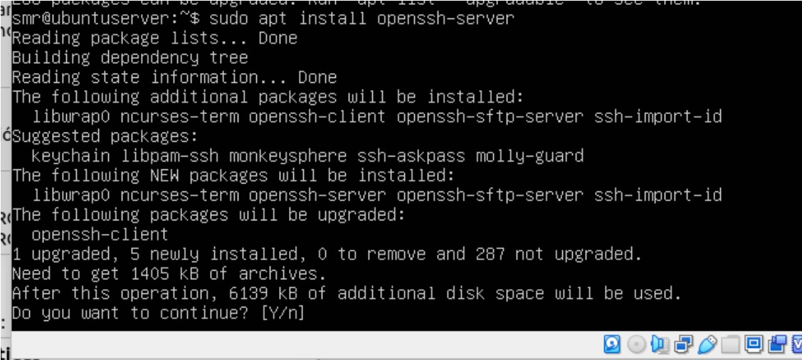
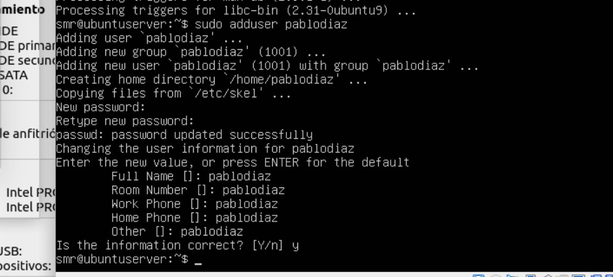
- Probar con PuTTY desde Windows
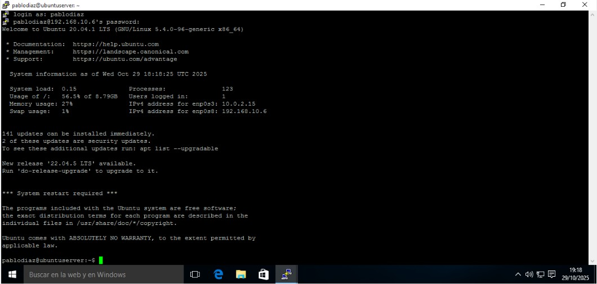
- Probar desde otro Linux con el comando ssh
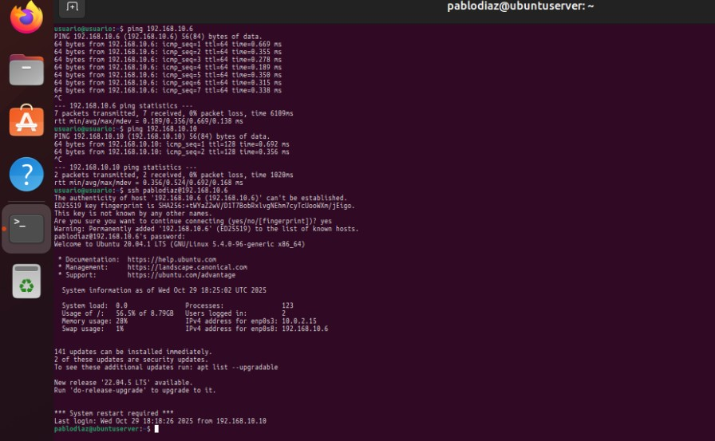
- ¿Cómo se podría conectar un usuario sin tener que meter la contraseña cada vez que se conecta?
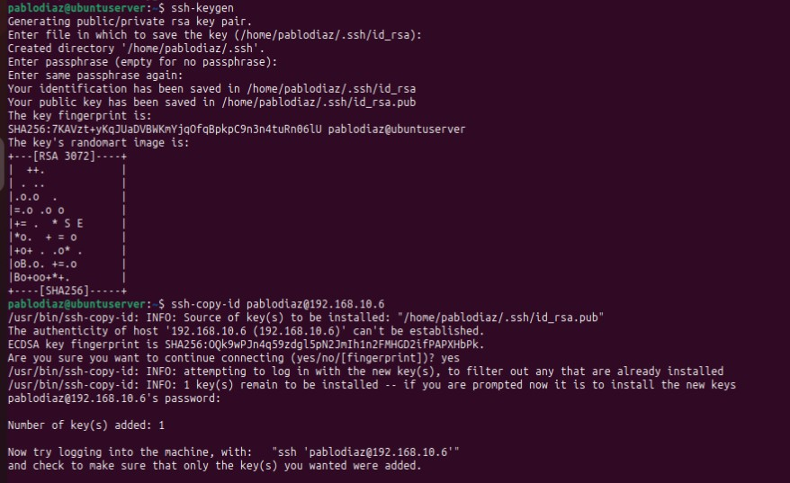
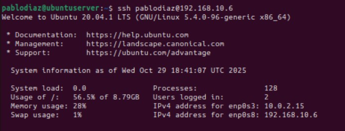
2. Conexión de escritorio remoto en Windows (RDP)
- Levantar el servicio RDP en Windows
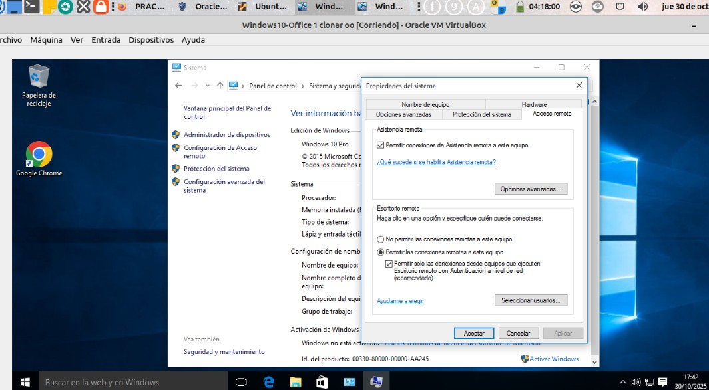
- Conexión cliente RDP desde:
- Windows
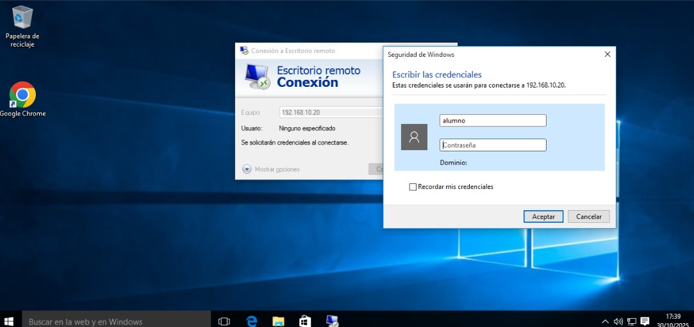
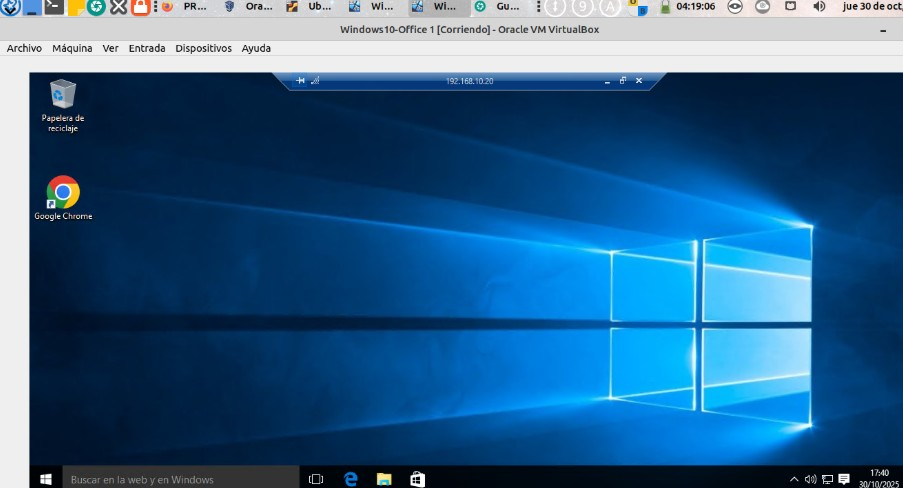
- Linux (Remmina)
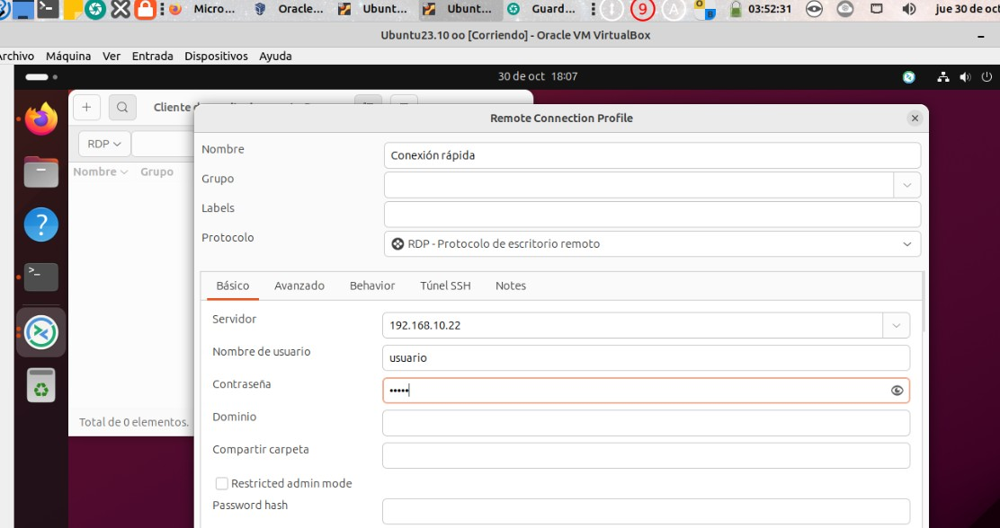
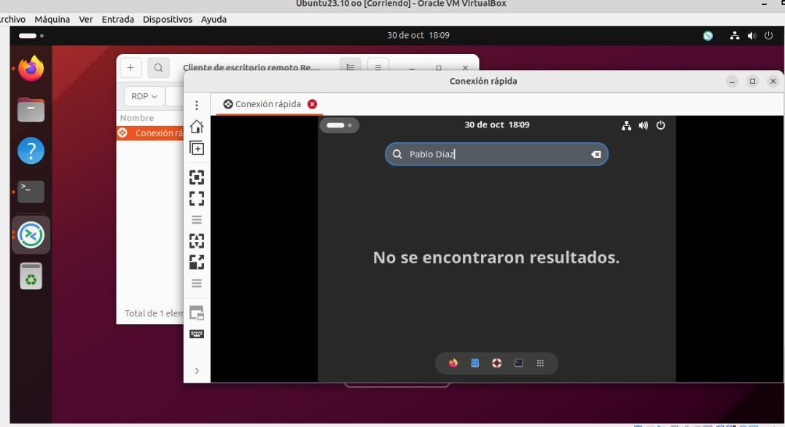
3. Instalar TeamViewer en Windows y Linux
- Conectar a administración remota desde:
- Otro equipo Windows y desde otro Linux
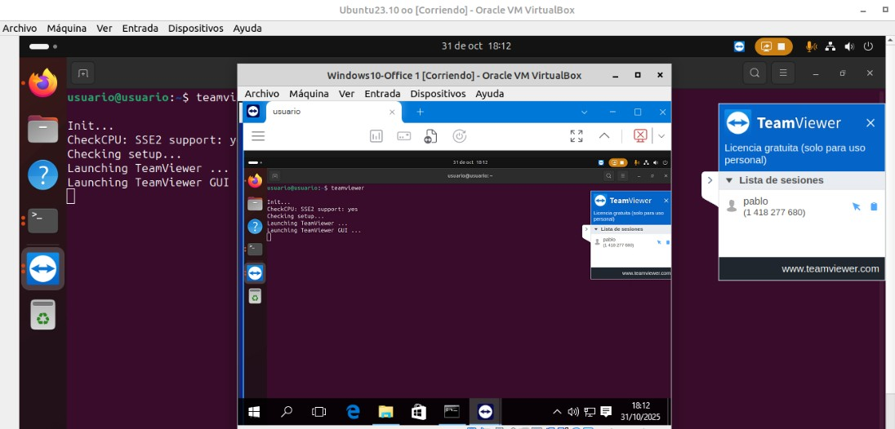
- Desde móvil
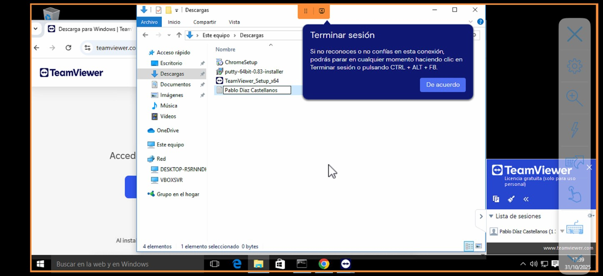
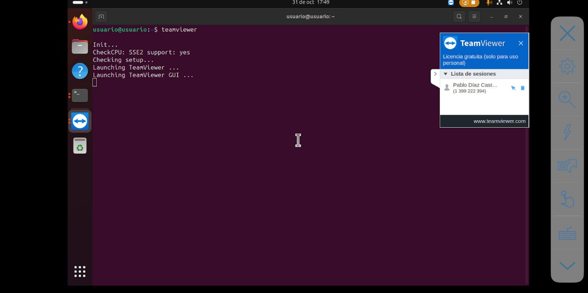
- Conectar en modo presentación y ver las opciones disponibles
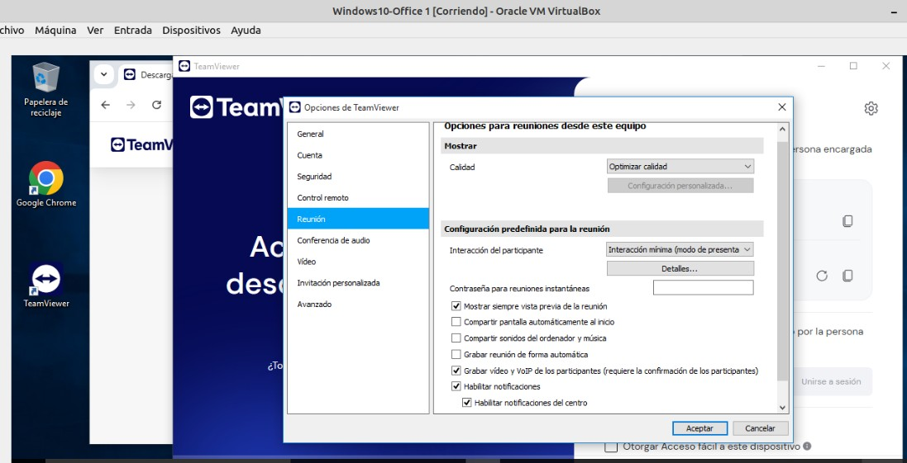
- Desde móvil
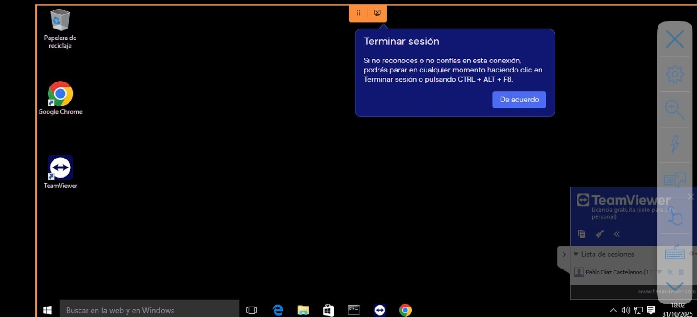